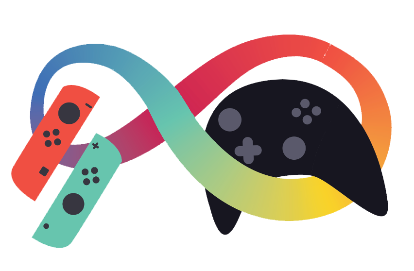
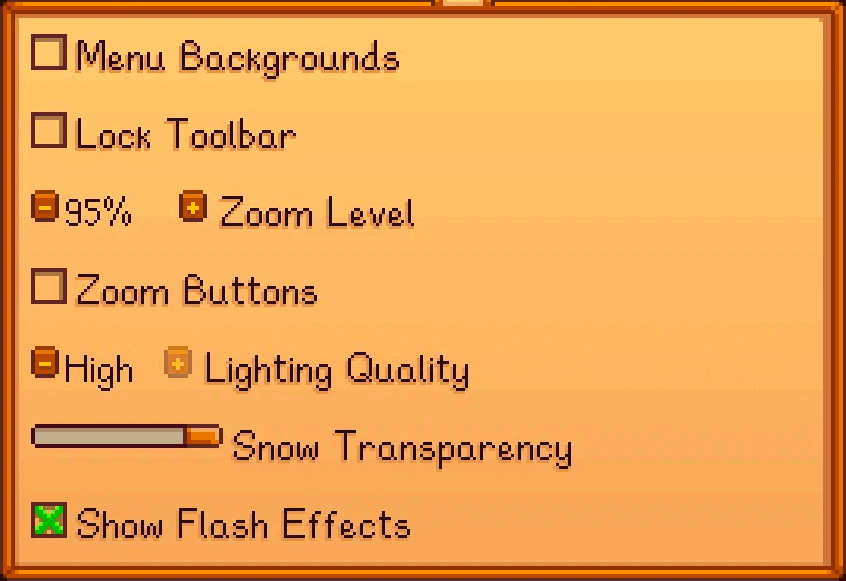
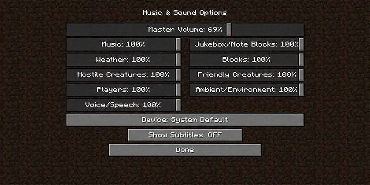
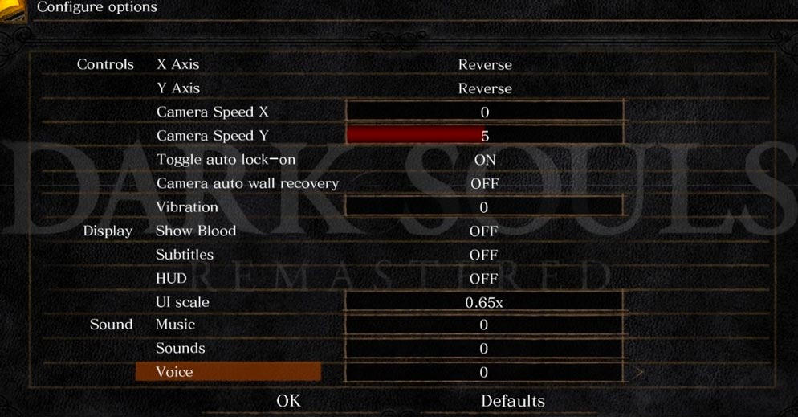
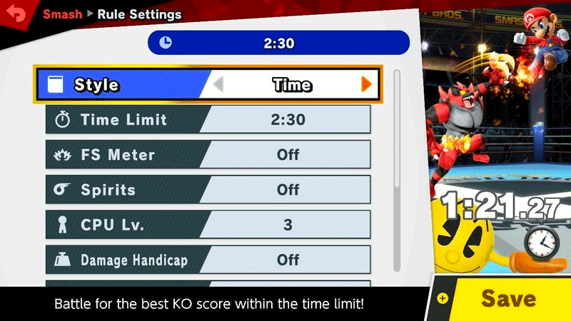
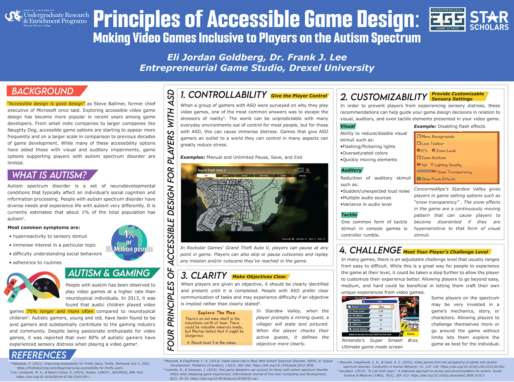

Research Analysis
Accessible Design
Presenting Information
Overview
As a 2022 Drexel University STAR Scholar, I was given 10 weeks to create a research project and present my project at the STAR Summer Showcase.
Working with Drexel University's Entrepreneurial Game Studio (EGS), I researched accessible game design for users with Autism Spectrum Disorder and compiled my findings in the research report below.
Abstract
Exploring accessible video game design has become more popular in recent years among game developers. From small indie companies to larger companies like Naughty Dog, accessible game options are starting to appear more frequently and on a larger scale in comparison to previous decades of game development. While many of these accessibility options aided those with visual, auditory, and mobility impairments, game options supporting players with autism spectrum disorder (ASD) are limited. This article will explore four of the main symptoms of ASD and corresponding principles of inclusive game design for players on the spectrum. These principles are meant to act as guides for game designers and developers to apply to their video game and encourage accessible features being discussed in the game creation process.
Introduction
Accessible design is good design
-Steve Balmer, former chief executive of Microsoft [1]

Throughout more recent decades, the topic of accessible design has come up more frequently in the world of video game designers and developers. While accessible design primarily focuses on improving the experience of disabled users, it can benefit non-disabled users as well. There are many situations that a non-disabled person might utilize accessible features offered. For example, a hearing person watching a movie may use subtitles if they are in a loud environment. Many people think of disabilities as permanent, visible, and debilitating, but many disabilities can be temporary, unseen, and people with them can live happy, successful lives.
Invisible disabilities can affect a person in a multitude of ways including limiting sight or hearing, but cognitive disabilities are the most often associated with invisibility. Cognitive disabilities include, but are not limited to; dyslexia, attention deficit/hyperactivity disorder (ADHD), and autism spectrum disorder (ASD).
People with disabilities should enjoy the satisfaction of playing engaging video games. Video games have been associated with stress reduction and more satisfaction in relationships [2]. In some cases, video game usage has even been observed to have medical benefits. For example, asthmatic children who played video games had “fewer hospitalizations, better symptom scores, [&] increased functional status…”[3]. Video games can be enjoyable and pleasant experiences, but barriers to accessibility can limit who is able to play these games.
In some cases, these barriers have been broken by game developers, as well as disabled gamers. DAGERS (Disabled Accessibility for Gaming Entertainment Rating System) editor-in-chief and fan of Naughty Dog’s Uncharted series, Josh Straub, spoke to the gaming company’s user interface designer, Alexandria Neonakis, about the challenges the game presented. Neonakis recounted that “He [Straub] loved Uncharted, huge uncharted fan”, but because of his physical disability he “couldn't beat Uncharted 2 because there's a series of doors you have to button-mash through at the end". Straub has a disability that impacts his motor functions and limits how fast he could repeatedly press a button. He went on to say, "I was faced with the reality that I had played this entire game, I had spent $60 on it, and I could not get any further without the help of an able-bodied person,". Later, Josh would advise Naught Dog on including accessibility features in their next games, most notably Uncharted 4. In the fourth installment of the series, any missions where a player would need to button-mash to progress, they have the option to enable a long-press option instead [4]. This is only one example of how disabled gamers have used their voices to reach game developers. Josh Straub was likely not the only Uncharted player to encounter difficulty, as 66% of disabled gamers have also faced a barrier in relation to gaming [5]. Because of Straub speaking out and encouraging Naughty Dog to incorporate accessible design, many more gamers get to experience video games without obstacles.
The purchasing Power of Disabled Gamers
While the rising attention on accessibility efforts in gaming is becoming more recognized, the barriers to enjoyable gaming experiences still exist for many. In the United Kingdom, almost 20% of adults have a disability and households with at least one disabled member had a combined purchasing power of over £270 billion5. Businesses that neglect to consider accessibility are more likely to miss out on the market, dubbed “the purple pound”. All companies, including video game companies, that prioritize accessible design could expect to “achieve 28% higher revenue, and see a 30% better performance in economic profit margins”[5]. Designing with disabled users in mind benefits both the companies and consumers alike.
50% of disabled gamers have reported that a game’s accessibility options have impacted their decisions to purchase the game. Since 63% of disabled gamers have purchased additional downloadable content or video game subscriptions in the last year, compared to 50% of non-disbaled gamers, companies should recognize the importance of these markets[5].
Autism Spectrum Disorder and Impact in the Gaming Industry
Autism spectrum disorder is a set of neurodevelopmental conditions that typically affect an individual’s social cognition and information processing. People with autism spectrum disorder have diverse needs and experience life with autism very differently. Some of the most common symptoms are hyper reactivity to sensory stimuli, immense interest in a particular topic or topics, difficulty understanding social behaviors, and an adherence to routines[6].
It is currently estimated that about 1% of the total population has autism6. That means about 80 million people globally have autism in 2022, but it’s predicted that this number will only increase. In 2018, the CDC observed that an estimated 2% of all 8-year old children have ASD[7]. Autism is a relatively common disorder found in people belonging to diverse backgrounds. People are diagnosed with ASD in many different countries, belonging to different ethnicities, and socio-economic statuses. Many people with ASD have successful careers in a multitude of fields, including the video game industry. The United Kingdom video game industry has been reported to employ 4 times more autistic adults than the general population[8].
This growing population has been observed to play video games at a higher rate than neurotypical individuals. In 2013, it was found that austic children played video games 75% longer and more often compared to neurotypical children[9]. Autistic gamers, young and old, have been found to be avid gamers and substantially contribute to the gaming industry and community. Despite being passionate enthusiasts for video games, it was reported that over 80% of autistic gamers have experienced sensory distress when playing a video game[10]. Sensory distress can occur when an individual is overwhelmed by an intense stimulus that affects their sense of sight, hearing, feeling, smell, or taste. In Stephen Shore’s autobiography, Beyond the wall: Personal experiences with autism and Asperger syndrome, the author details how powerful sensory distress can be. To describe the experience to a neurotypical audience, he writes, “Imagining that one's senses are 1000 times more sensitive than reality.”[11]. Designing inclusive games for players with ASD is not only enabling more people to play your game, but it gives everyone with or without ASD a more memorable and enjoyable gaming experience.
Symptoms of ASD
Intolerance of Uncertainty
When some aspects of life seem out of one’s control, it tends to cause frustration and anxiety. Unpredictability causes anxiety in people with autistic spectrum disorder more than neurotypical individuals[12]. This unpredictability can manifest in external factors like the actions of others and unforeseeable events. This anxiety can cause sensory sensitivity in people with ASD and even result in feelings of distress due to overwhelming sensory stimuli.
Sensory Distress
Individuals with ASD are more likely to experience sensory distress due to visuals, sounds, and other senses that are hard to process[6]. For example, loud sounds can be quite uncomfortable to people with ASD. When faced with overwhelming stimuli like loud noise or flashing visuals, many individuals attempt to remove themselves from the cause or discontinue the source. For example, a room with yelling students may cause a student with ASD to leave the room. In an environment where the source is controllable like a loud phone rigging, the individual may turn the ringer off.
Rigid Thinking
When communicating, people with ASD prefer direct language and may struggle with abstract or inexplicit language[6]. They tend to take words more literally than figuratively and may misinterpret or confuse a speaker’s meaning behind their words. When talking to people with ASD, it is more preferable to use straightforward language or explain figures of speech if they’re met with confusion. Especially when giving instructions or designating goals, utilizing structured, easy to understand, and direct language is very beneficial.
Repetition and Restricted Interests
Many people with ASD may have an interest that they are exceptionally invested in. For some, it may be a form of media, a genre of music, or an animal. These interests can be as specific as a type of car or more broad like memorizing the countries and capitals of Asia. These fixated interests may lead people with ASD to research and learn as much as they can about them. Research may be restricted to online searching, reading books, rewatching shows, or playing video games.
Four Principles of Inclusive Game Design for Autistic Players
These guidelines are suggested for video game developers and designers to increase accessibility. These guides primarily apply to single player games, but depending on the game, certain aspects can be applied to multiplayer games as well. It is completely up to the discretion of the video game developers/designers whether certain accessible features are applicable in their game. This guide is meant to generate ideas and provide guidance for understanding and accommodating accessibility for gamers on the spectrum.
While these principles are intended for players with ASD, these recommendations can help many gamers off the spectrum as well. Some non-ASD individuals may have similar experiences and enjoy being given accessibility options despite not being on the spectrum. Because ASD has a 70% comorbidity rate, many of these guidelines could be applied to similar conditions such as ADHD, dyslexia, and many others[6]. These suggested settings are not conclusive either, as every individual with ASD requires different forms of support. The best way to create a game designed with inclusivity in mind is to utilize play testing and involve play tester with ASD.
Give the Player Control - Controllability
Players with ASD prefer to be in control of their gaming experience. When a group of gamers with ASD were surveyed on why they play video games, one of the most common answers was to escape the stressors of reality[13]. The world can be unpredictable with many everyday environments out of control for most people, but for those with ASD, this can cause immense distress. Games that give ASD gamers an outlet to a world they can control in most aspects can greatly reduce stress.
One example of applying this principle would be to give the player complete control in pausing, saving, or exiting the game at any point. This could be during a battle, cutscene, or any other moments in a game. This feature gives the control back to the player if they need to take breaks to perform other tasks around them or if they are becoming overwhelmed.
Example #1: Grand Theft Auto V allows players to pause at any point. Players can also skip or pause cutscenes and replay any mission and/or cutscene they’ve reached in the game.
Provide Customizable Sensory Settings - Customizability
In order to prevent players from experiencing sensory distress, these recommendations can help guide your game design decisions in relation to visual, auditory, and even tactile elements presented in your video game.
Visual
Although ASD doesn’t typically include visual impairments, many people with the condition have issues processing visual stimuli. In one study relating to autistic individuals and visual stimuli, one participant said, “I don’t think my eyes see differently from other people, I think I process it differently”[14]. Certain visual stimuli have been associated with sensory distress in people with ASD. While not all people with ASD have hypersensitivity to specific visuals, providing these options can help players navigate a game much more effectively and with less stress.
Players should have the ability to reduce or disable certain visual stimuli that commonly results in sensory distress. This can include certain effects like:
- Flashing/flickering lights
- Bright/Oversaturated colors
- Quickly moving elements
- Complex patterns
- Screen shaking effects
Example: Stardew Valley gives players in game setting options such as “show flash effects” such as lightning (enable/disable), “snow transparency” (0-100% slider), and “lighting quality” (low, med, high). The snow effects in the game are a continuously moving pattern that can cause players to become disoriented if they are hypersensitive to that form of visual stimuli. Allowing players to reduce or turn off the snow is a highly effective way of designing with inclusivity in mind.
Game developers and designers should also account for any motion. Autistic video game players reported that the number one negative aspect of playing video games was a video game’s limited features. One of these features being motion sensitivity. In a 2015 study, one participant with ASD mentioned how, “movement sensitivity and inversion looking.” was problematic[13]. Giving players control of their perspective’s motion sensitivity and field of view can prevent ASD and non-ASD players from developing motion sickness.
Auditory
Auditory stimuli can also trigger sensory distress in people with ASD. When faced with distress caused by auditory stimuli in real life or in a video game, it’s common for individuals to attempt to remove themselves from the situation or source of noise. Being exposed to unpleasant auditory stimulus could result in player with ASD having a negative experience with a video game and being less likely to play again or purchase more from that company. Sounds that commonly trigger sensory distress in people with ASD can include:
- Sudden or unexpected noise
- Loud noise
- Overlapping noise/multiple audio sources
- Extreme variance in audio level
Having options that reduce or limit audio triggers for gamers with ASD gives the player much more control and options to customize the game to fit the individual’s unique needs. This could include having separate, adjustable sound settings. Separating dialogue from ambient noise and sound effects could effectively fulfill this principle.
Example: Minecraft allows players to use a slider ranging from 0% to 100% to modify different sounds, including a master volume. For instance, a player can choose to reduce background music, while having amplified audio for hostile mobs.
Tactile
In comparison to auditory and visual stimuli, tactile stimuli is relatively limited in most video games. One common form of tactile stimuli in console games is controller rumble. When the player’s controller unexpectedly vibrates, lightly or strongly, it could cause distraction or distress, taking away from the gaming experience. Games should have optional controller rumble and the option to reduce/increase its strength.
Example: Dark Souls Remastered has an option called “Vibration” that can be tuned from 0 to 10 depending on preferred controller rumble strength.
Make Objectives Clear - Clarity
When players are given an objective, it should be clearly identified and present until it is completed. People with ASD prefer clear communication of tasks and may experience difficulty if an objective is implied rather than clearly stated[11]. To accommodate for this, a game could display the objective visually to communicate to the player. While objective-prompting dialogue can remain as the game developer intended, it may be helpful to have a questbook or mission log that accurately lays out the specific goal that the player needs to fulfill.
Example: In Stardew Valley, when the player prompts a mining quest, a villager will say, “There's an old mine shaft in the mountains north of town. There could be valuable minerals inside, but Marlon hinted that it might be dangerous.”. After this, the player can check their active quests and it defines the objective more clearly as, “Reach level 5 in the mines”
Meet Your Player’s Challenge Level - Challenge
In many games, there is an adjustable challenge level that usually ranges from easy to difficult. While this is a great way for people to experience the game at their level, it could be taken a step further to allow the player to customize their experience better. Allowing players to go beyond easy, medium, and hard could be beneficial in letting them craft their own unique experiences from video games. Ways to do this could include allowing players to modify the amount of player health, strength of enemies, abundance of power-ups, and more. For example, Gamers with ASD, just like gamers without ASD, may want an easier game where they have unlimited health points. Other gamers with ASD may have played one game a lot and want even more of a challenge, such as low health points and stronger enemies.
Example: Super Smash Bros. Ultimate give players many options of how they’d like to customize their battling experience. Players can choose to enable a time limit, have unlimited or limited lives, and what kind of power-ups are available.
Advertise Your Accessible Video Game
Once a video game is ready for publication and all accessibility options have been finalized, it would be advantageous to advertise specific inclusive features. 50% of disabled gamers expressed that a video game’s information on accessible features impact their decision to buy it[5]. By advertising games’ accessible features, game designers can widen their game’s market to include a plethora of disabled gamers and non-disabled gamers alike. Not only does advertising accessibility features normalize and celebrate accessibility within gaming communities, but also the gaming industry.
Accessible Games Are Well Designed Games
Claimed as one of the most accessible games of all time, The Last of Us Part II broke the record for most awards won at Game Awards in 2020. This game had over 60 customizable accessibility options with many that aid people with cognitive disabilities, including people with ADS. They have numerous controls to adjust different aspects of the game’s difficulty in game combat and exploration as well as sensory settings like motion sickness reduction and controller vibration options. Out of a total of 576 awards, the Last of Us Part II took 300 awards[15]. Some of the awards The Last of Us Part II took home were “Innovation in Accessibility”, “Game of the Year”, and “Best Game Direction”. This wasn’t the only record broken by the Naughty Dog game. In 2020, it also became the third best selling game in the United States and the fastest selling game on the Playstation 4[16]. One of the most accessible games in recent history has been celebrated by gamers and industry professionals alike.
It’s no coincidence that accessible video games like the Last of Us Part II have been recognized for great design and do well commercially. When designers and developers put thought into how many different players can enjoy a game, it enables the game to be much more rewarding.
A Note for Indie/Small Game Studios & Creators
It’s understandable for game creators with limited funds and supply to not be able to go as in depth in accessible options as a larger game studio like Naughty Dog. One of the accessibility consultants for the Last of Us Part II, Ian Hamilton, spoke on how important it is to provide accessibility options even if designers can’t provide everything.
“[Hamilton] explained that he’s witnessed developers across industries “doing nothing, out of fear of being unable to do everything,” and as such, his advice is simply “do something. Anything. Pick some low hanging fruit.” The result of doing even the smallest thing, “will simply mean more players can enjoy your game.”[17]
Providing some accessible options, even if limited, can enable more people, with disabilities or without, to play a video game tailored to fit their unique playing style. As Ian Hamilton simply described, something will always be better than nothing.
Conclusion
Although this guide is meant to help game designers and developers, an even better way to incorporate accessibility settings is by performing user testing with diverse video game testers. Involving gamers with a range of disabilities, including gamers with autism spectrum disorder, to test and give feedback on a video game will only enhance the playability for all gamers.
Regardless of which accessible settings are enabled or disabled, players should have a pleasant and rewarding experience playing video games. Gamers on or off the spectrum should benefit from accessible options in their gaming experiences. While every video game is different and has different features, functions, challenges, and objectives, all games in development could benefit from the perspective of gamers with ASD. Similar to DAGERS editor-in-chief Josh Straub when he reached out to Naughty Dog’s team about his barriers playing Uncharted 2, gaming companies should work with those who have experience and knowledge to get a better understanding of how to make video games more accessible to gamers on the spectrum.
Poster Displayed At 2022 STAR Summer Showcase
References
- 1. Makowski, P. (2021). Improving accessibility for Firefly Users. Firefly. Retrieved July 2, 2022, https://fireflylearning.com/blog/improving-accessibility-for-fireflyusers/
- 2. Markey, Ferguson, C. J., amp; Hopkins, L. I. (2020). Video Game Play: Myths and Benefits. American Journal of Play, 13(1), 87-106
- 3. Bartholomew, Gold, R. ., Parcel, G. ., Czyzewski, D. ., Sockrider, M. ., Fernandez, M., Shegog, R., & Swank, P. (2000). Watch, Discover, Think, and Act: evaluation of computer-assisted instruction to improveasthma self-management in inner-city children. Patient Education and Counseling, 39(2), 269–280. https://doi.org/10.1016/S0738-3991(99)00046-4
- 4. Sarkar, S. (2016, May 19). Uncharted 4 developers explain why they added accessibility options to the game. Polygon. Retrieved June 27, 2022, from https://www.polygon.com/2016/5/19/11716174/uncharted-4-accessibility-options-disabled-gamers
- 5. Scope. (2020, December). Accessibility in gaming report. Scope. Retrieved July 1, 2022, from https://www.scope.org.uk/campaigns/research-policy/accessibility-in-gaming/
- 6. Lai, Lombardo, M. V., & Baron-Cohen, S. (2014). Autism. LANCET, 383(9920), 896–910. https://doi.org/10.1016/S0140-6736(13)61539-1
- 7. Maenner, M. J., Shaw, K. A., Bakian, A. V., Bilder, D. A., Durkin, M. S., Esler, A., Furnier, S. M., Hallas, L., Hall-Lande, J., Hudson, A., Hughes, M. M., Patrick, M., Pierce, K., Poynter, J. N., Salinas, A., Shenouda, J., Vehorn, A., Warren, Z., Constantino, J. N., … Cogswell, M. E. (2021). Prevalence and characteristics of autism spectrum disorder among children aged 8 years — autism and Developmental Disabilities Monitoring Network, 11 sites, United States, 2018. MMWR. Surveillance Summaries, 70(11), 1–16. https://doi.org/10.15585/mmwr.ss7011a1
- 8. Taylor, M. (2022, March). UK Games Industry Census 2022. University of Sheffield.
- 9. Mazurek, & Engelhardt, C. R. (2013). Video Game Use in Boys With Autism Spectrum Disorder, ADHD, or Typical Development. Pediatrics (Evanston), 132(2), 260–266. https://doi.org/10.1542/peds.2012-3956
- 10. Costello, R., & Donovan, J. (2019). How game designers can account for those with autism spectrum disorder (ASD) when designing game experiences. International Journal of End-User Computing and Development, 8(2), 29–55. https://doi.org/10.4018/ijeucd.20190701.oa1
- 11. Davidson. (2010). “It cuts both ways”: A relational approach to access and accommodation for autism. Social Science & Medicine (1982), 70(2), 305–312. https://doi.org/10.1016/j.socscimed.2009.10.017
- 12. Neil, L., Olsson, N. C., & Pellicano, E. (2016). The relationship between intolerance of uncertainty, sensory sensitivities, and anxiety in autistic and typically developing children. Journal of Autism and Developmental Disorders, 46(6), 1962–1973. https://doi.org/10.1007/s10803-016-2721-9
- 13. Mazurek, Engelhardt, C. R., & Clark, K. E. (2015). Video games from the perspective of adults with autism spectrum disorder. Computers in Human Behavior, 51, 122–130. https://doi.org/10.1016/j.chb.2015.04.062
- 14. Parmar, Porter, C. S., Dickinson, C. M., Pelham, J., Baimbridge, P., & Gowen, E. (2021). Visual Sensory Experiences From the Viewpoint of Autistic Adults. Frontiers in Psychology, 12, 633037–633037. https://doi.org/10.3389/fpsyg.2021.633037
- 15. Dick, B. P. (2021, April 23). The last of US 2 breaks game of the year record. Game Rant. Retrieved July 12, 2022, from https://gamerant.com/the-last-of-us-2-game-of-the-year-record/
- 16. Robinson, A. (2020, August 16). The last of US 2 is now PlayStation's third highest-grossing game ever in the US. VGC. Retrieved July 12, 2022, from https://www.videogameschronicle.com/news/the-last-of-us-2-is-now-playstations-third-highest-grossing-game-ever-in-the-us/
- 17. Bayliss, B. (2022, February 3). The last of US 2 accessibility consultants - advancing the industry. Can I Play That? Retrieved July 13, 2022, from https://caniplaythat.com/2020/06/23/the-last-of-us-2-accessibility-consultants-advancing-the-industry/